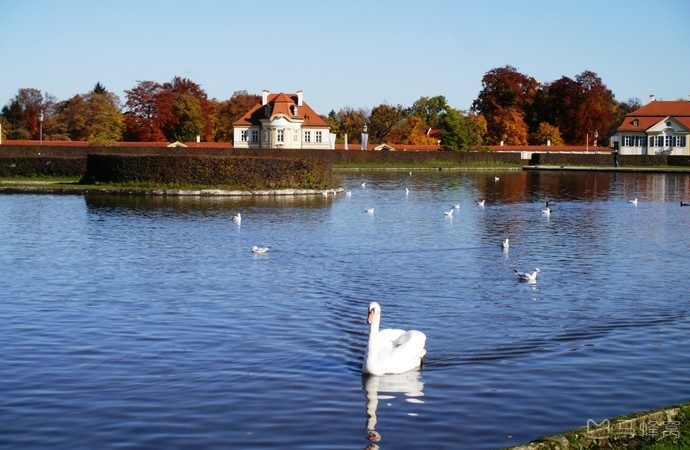

morly旅游网
慕尼黑，是古朴与现代的结合，是复古与创新的碰撞。这座阿尔卑斯山南麓的城市，巴伐利亚州的首府，保留着原巴伐利亚王国都城的古朴风情，拥有许多巴洛克和哥特式建筑，它们是欧洲文艺复兴时期的典型代表，仿佛在诉说着这城市古老的故事。这里是德国主要的经济、文化、科技和交通中心之一，也是宝马的故乡、第20届奥运会的举办地。啤酒节的欢歌在这里，拜仁慕尼黑球迷的欢呼在这里。畅游老城与新城间，用脚步体验时空交换的错觉，定能激发你无限的想像力。
慕尼黑（德文：München），也称明兴，是德国巴伐利亚州的首府。慕尼黑分为老城与新城两部分，总面积达310平方公里。2010年人口为130万，是德国南部第一大城，全德国第三大城市（仅次于柏林和汉堡）；都会区人口达到270万。 慕尼黑位于德国南部阿尔卑斯山北麓的伊萨尔河畔，是德国主要的经济、文化、科技和交通中心之一。慕尼黑同时又保留着原巴伐利亚王国都城的古朴风情，因此被人们称作“百万人的村庄”。是生物工程学、软件及服务业的中心。 慕尼黑是德国第二大金融中心（仅次于法兰克福），慕尼黑是欧洲重要的出版中心之一，拥有《南德意志报》出版社等众多出版社
必游景点
慕尼黑的主要景点集中在老城区附近，以玛丽安广场为中心，步行即可游览新旧市政厅、圣母教堂、皇宫等景点。若时间充足，那么天鹅堡和宁芬堡可分别用一天时间游览。
玛利亚广场
玛丽亚广场座落在老城中心，被誉为慕尼黑的心脏。除了著名的新市政厅，近旁还有老市政厅、圣母教堂、老彼得大教堂等热门景点，推荐一站式打卡。广场四周各色餐馆和商场云集，是逛吃逛吃的好去处。购物街首推Kaufinger Straße，从圣母广场通往卡尔斯广场(Karlsplatz)的大街便是。自驾游可以把车停在纽豪瑟步行街(Neuhauser Strasse)的地下车库，距离广场仅三四百米。每年11月25日前后至12月24日，圣母广场还是慕尼黑圣诞市场所在地，冬季前往一定不要错过。
 【交通】
【交通】步行：从火车站(Hbf)出来沿着Bayerstrasse街一直向东，经过卡尔斯广场(Karlsplatz)再沿步行街向东直走即是
轻轨：S1/S8至Marienplatz站
地铁：U3/U6至Marienplatz站
【门票】：免费
【开放时间】：全天
宝马博物馆
汽车、足球、啤酒，这也许是德国在全世界的代名词，宝马博物馆位于奥林匹克公园旁，和宝马总部设在一起，办公楼不对外开放，馆内展示了从宝马的第一件产品航空发动机到第一辆摩托车、第一辆汽车到目前的概念车，在这里你可以了解整个宝马汽车的整个历史及发展。
宝马博物馆紧挨着宝马全球总部“四缸大楼”，是宝马品牌体验中心的核心组成部分。 博物馆外观设计别具一格，呈"碗形”。展厅设计为环绕式空间，根据年代和时期展出各类宝马汽车、摩托车和发动机，运用现代科技和多媒体手段演绎了宝马的成长与发展史。 旁边的宝马世界是新车展示和销售中心，可以一起逛逛。
【交通】：地铁：U3至Olympiazentrum站【门票】
成人：10欧
优惠价(18岁以下儿童和青年、学生、服役的年轻人，行动不便的老年人和残疾人)：7欧 5人以上团体(每人)：9欧
家庭票(2成人+3个18岁以下孩子)：24欧
【开放时间】
周二-周日、公共假期10:00-18:00（17:30停止入场），周一、12月24日-26日、12月31日及1月1日闭馆。根据月份和季节变化时间调整较大，建议提前查询官网。
宁芬堡宫
宁芬堡皇宫位于慕尼黑的西北郊，建于1664年，是公爵Ferdinand Maria为庆祝儿子Maximilian II Emanuel的诞生而修建的夏宫。宫殿主楼雄伟壮观，呈几何式对称，反映了当时的主流建筑审美。众多展厅中最值得一看的是中国之阁和群芳画廊，两厅分别陈列着中式壁纸屏风、瓷器漆器和出自宫廷画家之手的36幅美人画像。宫殿后方的巴洛克式皇家花园有阿玛琳宫、浴宫和宝塔宫三座宫殿，可单独买票参观或购买宫殿联票一齐游览。其中，狩猎行宫阿玛琳宫的镜厅（Spiegelsaal）尤为奢华精致，仿佛在像凡尔赛宫致敬。景区提供中文语音导游设备，单人3.5欧，15人以上的旅行团每人2.5欧。参团游览最好在宁芬堡管理中心提前预定设备。
 【交通】巴士：51路至Schloss Nymphenburg站
轻轨：S12/S17至Schloss Nymphenburg站
【门票】
宁芬堡联票Gesamtkarte "Nymphenburg"（含宁芬堡宫殿，马厩及瓷器展、宫殿花园）4月1日至10月15日11.5欧，优惠价9欧；10月16日至3月31日8.5欧，优惠价6.5欧
宫殿：6欧，优惠价5欧
马厩及瓷器展：4.5欧，优惠价3.5欧
宫殿花园联票Karte "Parkburgen"（含阿玛琳宫、浴宫和宝塔宫）：4.5欧，优惠价3.5欧（冬季不开放）
【开放时间】
4月1日-10月15日9:00-18:00,10月16日-次年3月31日10:00-16:00。休息日:1月1日、忏悔日星期二、12月24、25日和12月31日。
新市政厅
新市政厅位于圣母广场，始建于19世纪末，是慕尼黑的城市名片。华丽的新哥特式外墙和装点鲜花的阳台是新市政厅的符号，办公区域一般不对外开放，主要游览建筑外观。市政厅钟楼矗立着欧洲第五大的木偶报时钟，每天固定敲钟报时并伴随音乐表演，从中世纪延续至今。钟楼音乐表演再现了1568年威廉五世公爵大婚和欢庆鼠疫结束的城市历史场景，以瓦格纳和勃拉姆斯的曲子为伴奏，持续10分钟。 市政厅大楼一层设有信息问讯处和各种商店，顺便步行至广场边上购买水果是女生们的最爱。
【交通】轻轨：S1/S2/S3/S4/S6/S7/S8至Marienplatz站
地铁：U3/U6至Marienplatz站
【门票】：免费
【开放时间】
只有塔楼对外开放，登塔楼：10月-次年4月：周一-周五10:00-17:00，周六、周日及节日关闭；5月-9月：每天10:00-19:00。根据月份和季节变化时间调整较大，建议提前查询官网。
内容整理至网络，如有侵权，请联系我们！1255394075@qq.com